La Sacristía Coctelería y café de arte · Dénia
Abrimos todos los días por la tarde
Restauradores de arte convirtieron un garaje del centro de Dénia en un museo barroco con barra. Terciopelo, pan de oro, una Inmaculada del siglo XVII… y el Agua de Dénia, que solo se sirve aquí.
Ver la cartaAntiguo garaje de autobuses Sacristía desde MMXXI
I El museo
Aquí aparcaban autobuses. Hoy hay una Inmaculada del siglo XVII junto a la barra.
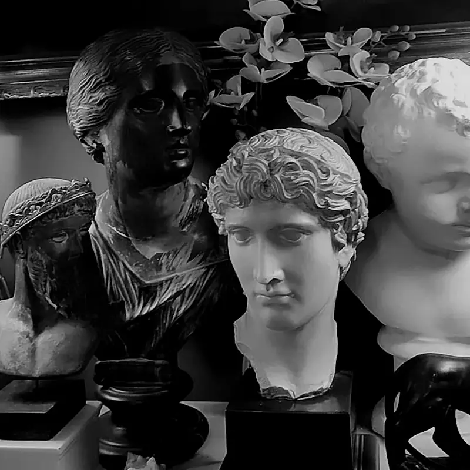
La Sacristía nació en un antiguo garaje de la calle Pare Pere. La levantaron restauradores de mobiliario, pintura y arte antiguo que se conocieron restaurando el convento de San Antonio de Padua, aquí en Dénia.
Sillones isabelinos, bustos, lámparas de araña, soles dorados: cada pieza llegó de rastros, anticuarios y casas particulares —casi todas de España, alguna de Francia o Inglaterra— y pasó por sus manos antes de colgar de estas paredes. Antes de abrir, se calienta incienso.
- sacristía (f.)
- 1. Lugar de la iglesia donde se guardan los ornamentos sagrados.
- 2. En Dénia: donde se guardan los dorados y se sirven las aguas.
Inventario de la casa
Siete piezas de una colección que no cabe en una web. Deslice.
-
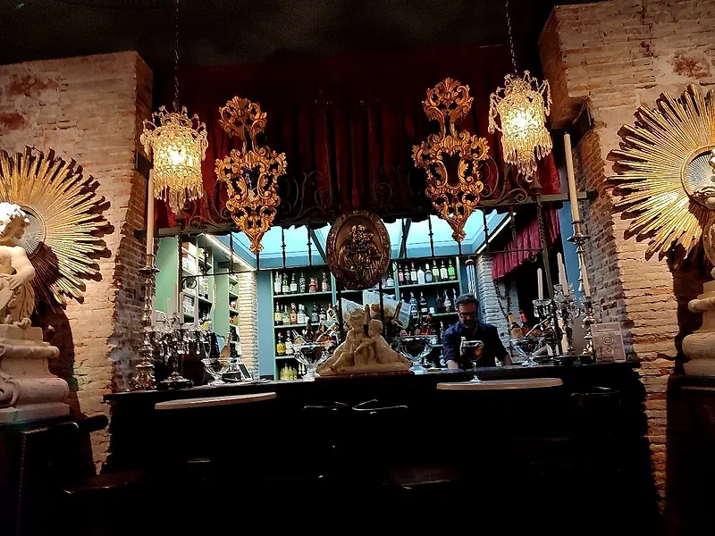
Nº ILa barra de los soles
Dos soles dorados, lámparas de cristal y la botillería a la vista. Aquí nacen las aguas.
-
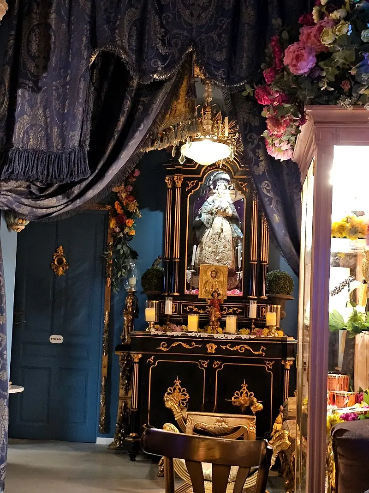
Nº IILa Inmaculada
Talla del siglo XVII, restaurada en casa: hubo que recuperar el tono de su piel y el azul de su manto.
-
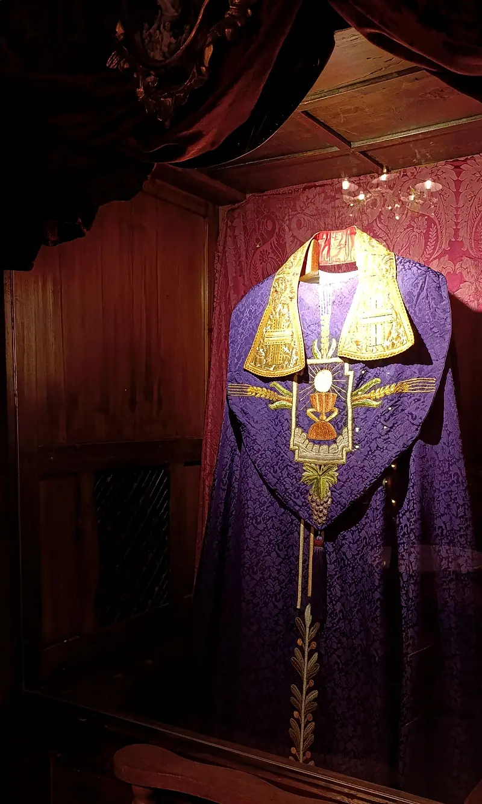
Nº IIIEl confesionario
Madera tallada, casulla morada y rejilla. Se escuchan confesiones; las absoluciones, en barra.
-
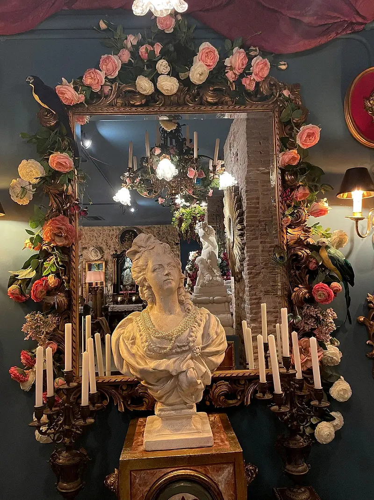
Nº IVEl espejo de las velas
Rosas, candelabros y un busto que vigila la sala sin pestañear.
-
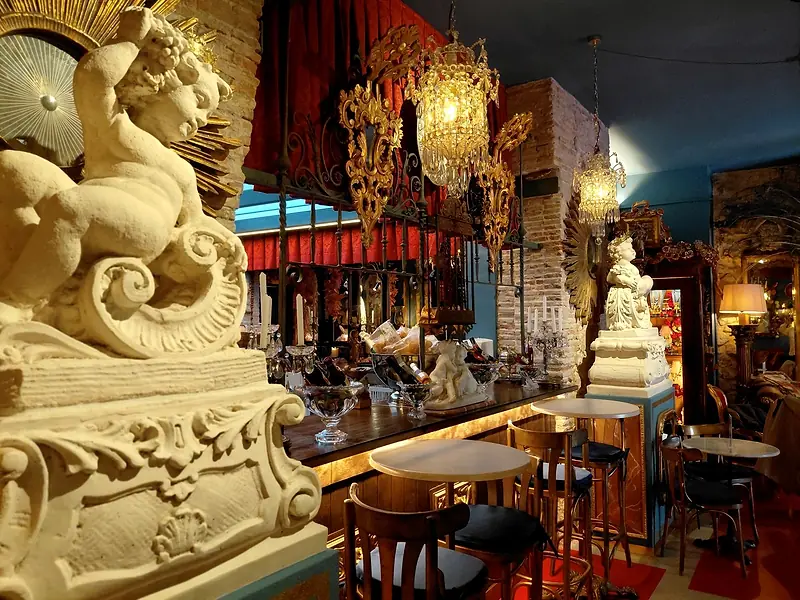
Nº VEl querubín de guardia
Vigila la barra desde su peana. No se le ha visto pedir nunca.
-
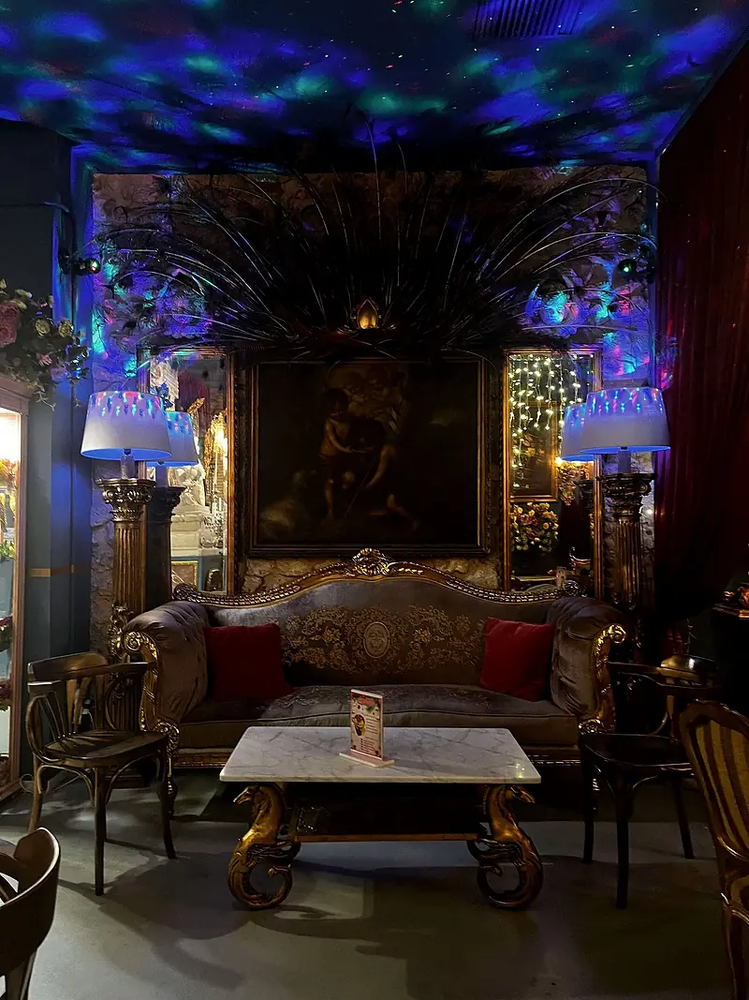
Nº VIEl rincón azul
Un cielo de luces sobre el sofá dorado. Para las conversaciones largas.
-
Nº VII
La vitrina de Natalia
Joyas artesanales hechas con cubiertos, obra de la artista Natalia. Pregunte por ellas: se pueden llevar a casa sin pecar.
II Las aguas espirituosas
Agua de Dénia
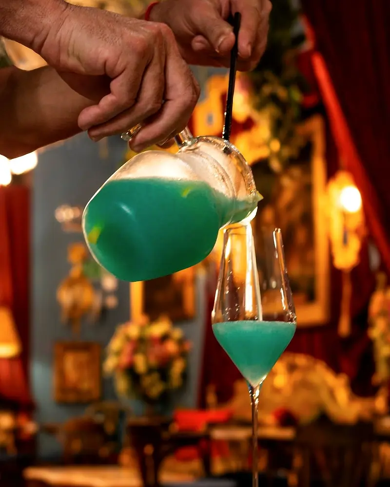
La más emblemática de la casa y la preferida de los feligreses: limón, un toque dulce de curaçao, el final burbujeante del cava y una combinación secreta que no sale de la sacristía.
Seis ingredientes secretos
Toque un sello.
Se sirve en garrafa, para compartir. Y solo aquí.
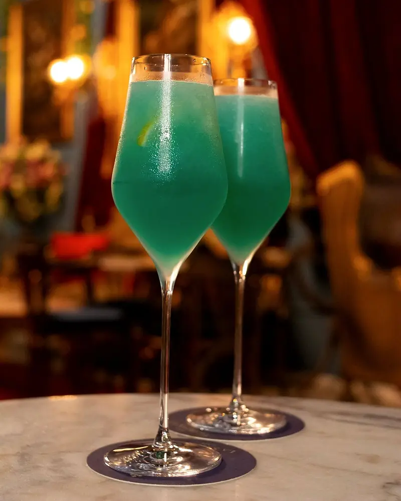
La familia de las aguas
- Agua de ValenciaLa clásica de la tierra.
- Agua de la SacristíaLa de la casa.
- Agua del EdénSu receta, en barra.
III La carta
Para cada pecado, una copa.
Una selección. La carta completa y los precios, en el local.
- 01
Agua de Dénia
Limón, curaçao, cava y una combinación secreta. En garrafa.
Solo aquí - 02
Agua de Valencia
La clásica valenciana, a la manera de la casa.
- 03
Agua de la Sacristía
La que lleva el nombre de la casa.
- 04
Agua del Edén
Pregunte en barra.
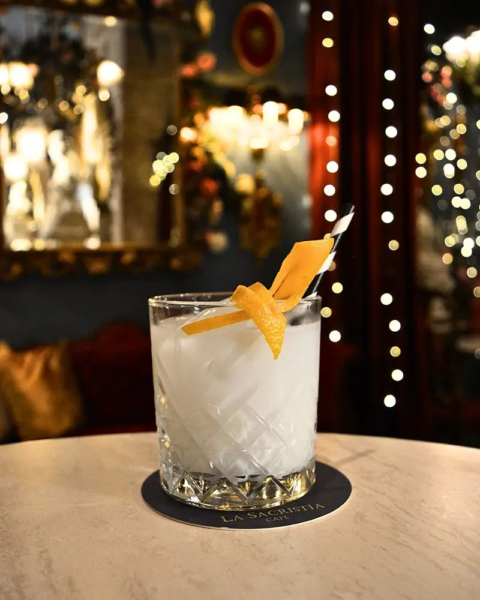
- 05
White Cocoorange
Licor de coco, batida de coco y triple seco, con confitura de canela y piel de naranja.
De autor - 06
Gin tonic rosa
El de las tardes largas.
- 07
Aperol Spritz
Para empezar el tardeo.
- 08
Moscow Mule
El clásico del jengibre.
- 09
Negroni
Amargo, de los de antes.
- 10
Sin alcohol
Cócteles sin alcohol: pregunte por los del día.
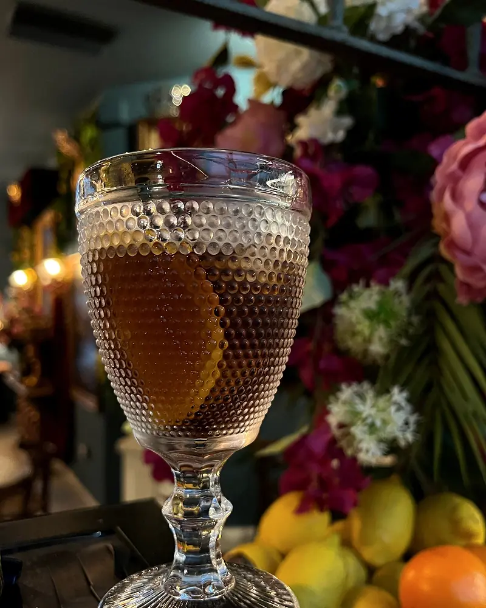
- 11
Vermut
En copa tallada, con su piel de naranja.
- 12
Champagne Alfred Gratien
Para lo que haya que celebrar.
- 13
Cavas
La base de las aguas, también a solas.
- 14
Vino rosado de la casa
Fresco, de tarde.
- 15
Moscatel
Dulce, de copita.
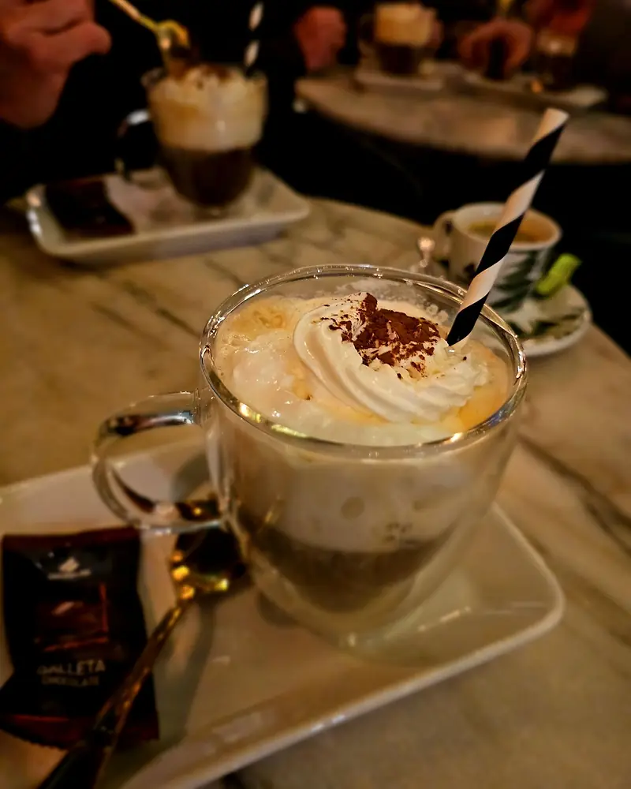
- 16
Capuccino
Y el resto de cafés e infusiones.
- 17
Tarta de chocolate con naranja amarga
Casera.
- 18
Tarta de calabaza
Casera.
- 19
Carrot cake
Casera, y con capuccino mejor.
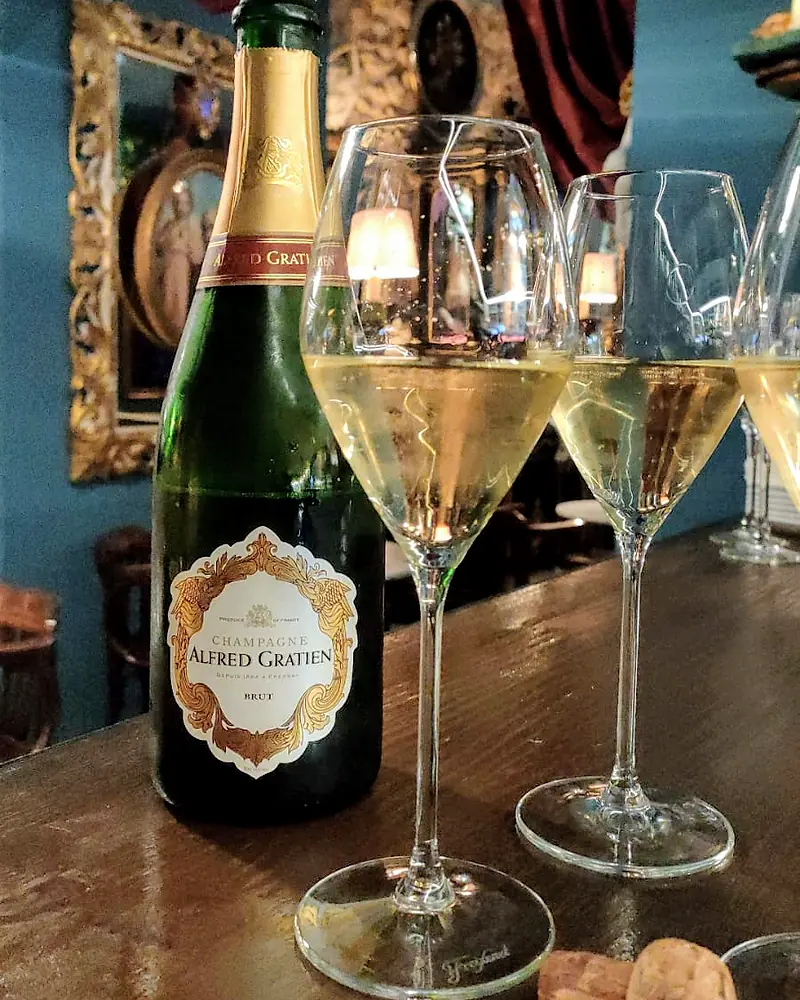
- 20
Patatas artesanas
Para acompañar la primera ronda.
- 21
Queso semicurado
Para compartir.
- 22
Ensaladilla
De tapa, como manda la tradición.
- 23
Tapas del día
Pregunte qué hay hoy.
IV El confesionario
¿No sabe qué pedir? Acérquese a la rejilla.
—Ave María Purísima. —Sin pecado concebida. ¿Qué le pide el cuerpo esta noche?
Absolución
Penitencia:
V Música en directo
Jueves 22:00
Cada jueves, voces en directo bajo los dorados. La agenda se anuncia en Instagram y las mesas vuelan: mejor reservar.
- Tardeo jueves, viernes y sábado desde las 16:00
- Noches señaladas San Valentín, Feria de Abril, Nochevieja
- En la casa desfiles, lecturas y alguna sorpresa
VI Lo que dicen los feligreses
«Un lugar mágico y único en Denia.»
«Nunca he estado en un bar tan hermoso.»
«Local de copas decorado barroco espectacular.»
«¡Interior increíblemente creativo!»
Hubo quien lo resumió así: como si Dalí hubiera redecorado Versalles… en Dénia.
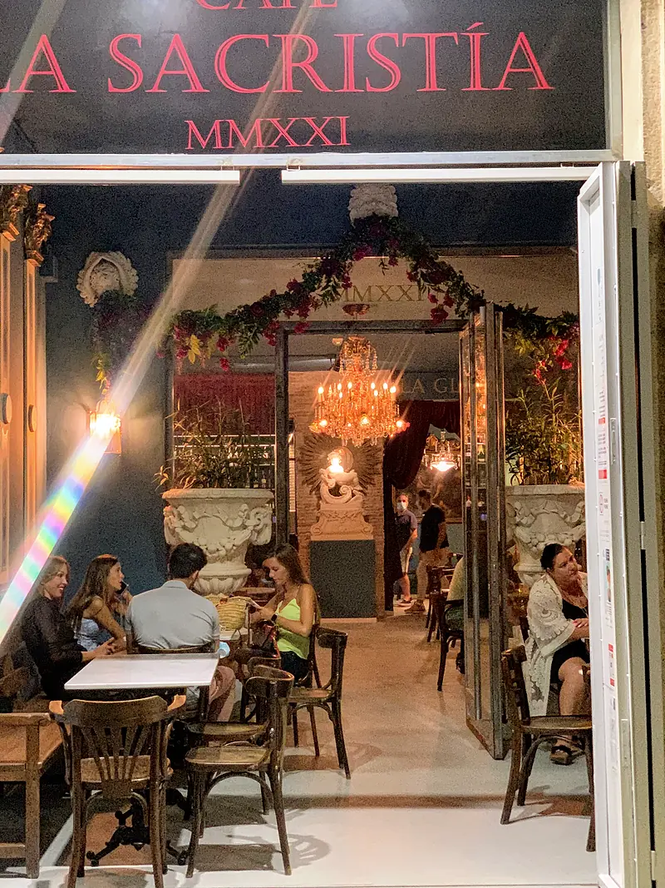
VII La visita
Pase y vea.
Carrer Pare Pere, 403700 Dénia, Alicante En el centro, a pocos pasos de lo alto de Marqués de Campo.
| Lunes | 17:00 – 01:00 |
|---|---|
| Martes | 17:00 – 01:00 |
| Miércoles | 17:00 – 01:00 |
| Jueves | 16:00 – 02:00 |
| Viernes | 16:00 – 02:00 |
| Sábado | 16:00 – 02:00 |
| Domingo | 17:00 – 23:00 |
Horario publicado por La Sacristía en abril de 2026. Puede variar en festivos y eventos.
- Reservas865 59 27 59
- Correolasacristiadenia@hotmail.com
- Instagram@lasacristiacafedenia
- AccesibleEntrada y aseo adaptados
- AparcarParkings públicos cercanos